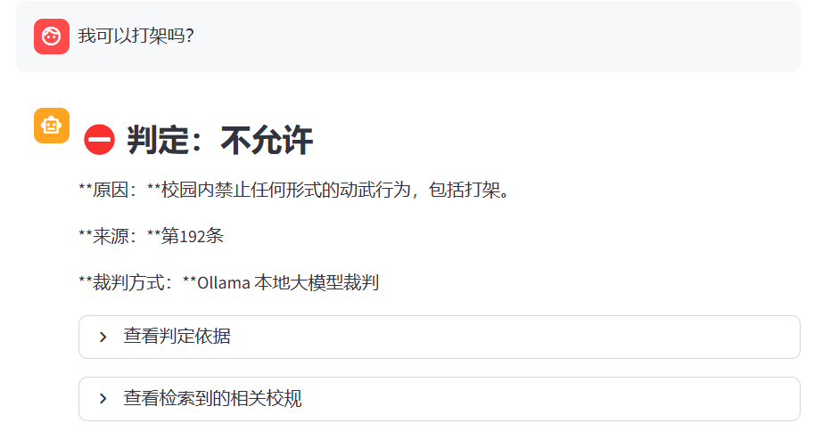
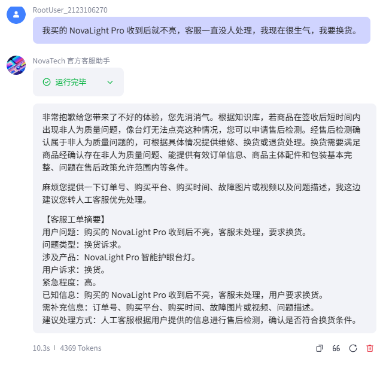
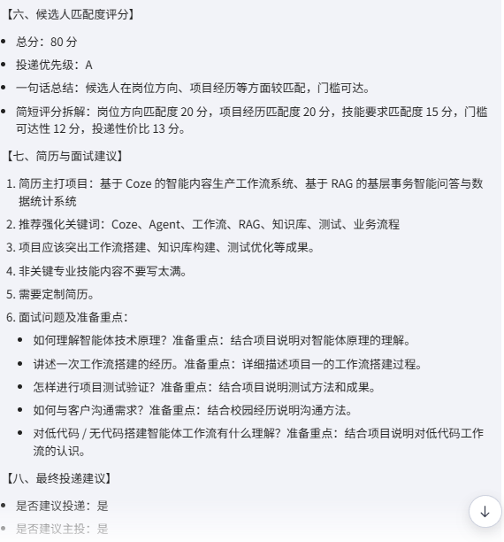
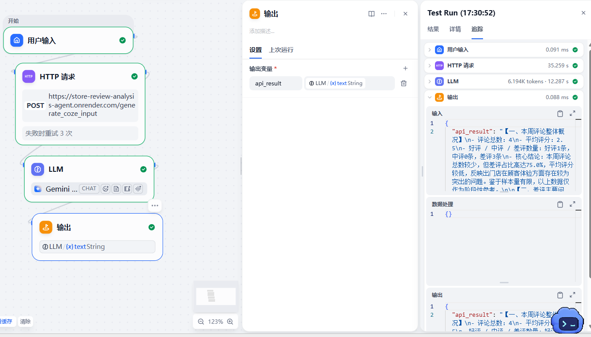
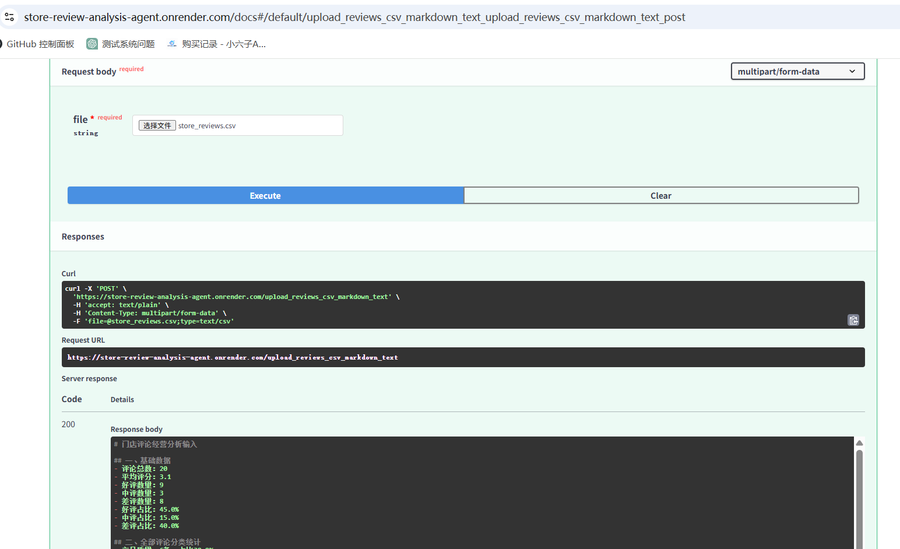

AI 应用实施
能把客户问题转成知识库、流程规则、测试用例和交付说明，重视稳定输出与可维护性。
项目不是按“会调用大模型”来展示，而是按岗位需要的工作结果来组织：能拆业务、能搭 Agent、能设计知识库和 Prompt、能验证边界，并把输出整理成产品或实施交付材料。
能把客户问题转成知识库、流程规则、测试用例和交付说明，重视稳定输出与可维护性。
围绕输入、判断、检索、生成、审核设计流程，让 Agent 服务具体任务而不是泛聊。
熟悉角色设定、知识库配置、边界约束、演示案例和测试记录的完整搭建链路。
能从用户场景出发定义功能、风险、指标和可展示成果，协助产品验证需求价值。
每个项目都保留了“为什么做、怎么搭、如何控制风险、如何测试”的痕迹。它们规模不大，但覆盖了 AI 应用岗位常见的真实工作颗粒度。
基于本地校规文本构建检索问答，支持语义检索、关键词补强、本地规则引擎和 Ollama 裁判，前端用 Streamlit 呈现可调试问答界面。

模拟智能硬件电商 NovaTech，搭建面向售前咨询、售后政策、物流发票、投诉处理和工单摘要的 Coze 客服智能体。

面向 AI 应用方向求职者，输入岗位 JD 后输出岗位类型判断、人岗匹配评分、投递建议、简历优化和面试问题。

基于 Python / Pandas 构建门店评论分析流程，实现 CSV 读取、评分统计、差评筛选和问题分类；使用 FastAPI 将分析逻辑封装为公网 API，并通过 Dify HTTP 请求节点调用 API，由 LLM 自动生成门店经营分析周报和典型差评回复建议。
V1 版本：早期使用 Python / Pandas 生成结构化 Markdown，再复制到 Coze 生成经营周报和回复建议；当前主线已升级为 FastAPI 公网 API + Dify 工作流。
V2 版本：将评论分析能力封装为 Render 公网 API，在 Dify 中用 HTTP 请求节点调用接口，再交给 LLM 节点输出周报和典型差评回复，实现从数据处理到 AI 生成的自动化闭环。


用作品集回答面试官最关心的问题：能不能从业务需求出发，把 Agent 搭出来、管住边界、测出问题，并讲清楚每一步为什么这样做。
客服、求职、校规、门店评论都先定义用户输入、任务目标和输出格式，避免把智能体做成泛聊工具。
能整理 Markdown 知识库、校规文本、候选人画像、岗位 JD 和 CSV 数据，转成 Agent 可用上下文。
重点处理不得编造、不得过度承诺、不得虚构经历、投诉转人工等风险场景。
多个项目使用 Coze 完成智能体配置、知识库接入、场景演示和测试记录，适合实施岗位表达。
具备 Python、Pandas、RAG、Embedding、本地模型调用和 Streamlit 前端展示的基础实践。
每个项目都有面向简历、面试和作品集展示的说明材料，能把过程变成可沟通成果。
这是一套适合 AI 应用实施和产品助理岗位的工作方法：先定义场景，再设计 Agent 能力，最后用测试把边界打磨出来。
明确用户输入是什么、Agent 应该输出什么、哪些内容必须转人工或提示风险。
把规则、FAQ、产品资料、岗位信息或评论数据整理成可检索、可引用、可复用的材料。
在 Prompt 中写清身份、任务、判断规则、回答格式和禁止事项，让 Agent 输出更稳定。
不只测试正常问题，也测试退款、投诉、虚构信息、岗位伪装、差评安抚等高风险输入。